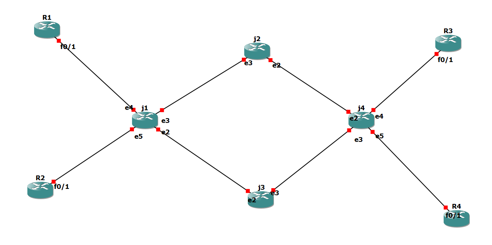

<div class="container">
  
  <div class="bubbles"></div>
</div>

<style>
  .container {
    position: relative;
    overflow: hidden; /* Pour cacher les débordements */
}

.responsive-image {
    width: 100%; /* Rendre l'image responsive */
    height: auto; /* Maintenir les proportions de l'image */
    display: block; /* Éviter les espaces en bas de l'image */
    animation: light-animation 2s infinite alternate; /* Animation des lumières */
    z-index: 1; /* Assure que l'image est au-dessus de l'effet lumineux */
}

@keyframes light-animation {
    0% {
        filter: brightness(1);
    }
    50% {
        filter: brightness(1.2); /* Augmente la luminosité */
    }
    100% {
        filter: brightness(1);
    }
}

.bubbles {
    position: absolute;
    top: 0;
    left: 0;
    right: 0;
    bottom: 0;
    pointer-events: none; /* Pour ne pas interférer avec les clics */
    overflow: hidden; /* Pour cacher les bulles qui sortent */
}

.bubble {
    position: absolute;
    border-radius: 50%;
    background: rgba(255, 165, 0, 0.9);
    animation: bubble-animation 4s infinite;
}

@keyframes bubble-animation {
    0% {
        transform: scale(0.1);
        opacity: 1;
    }
    100% {
        transform: translateY(-100vh) scale(1);
        opacity: 0;
    }
}

.bubbles .bubble:nth-child(1) { left: 10%; animation-duration: 3s; }
.bubbles .bubble:nth-child(2) { left: 30%; animation-duration: 4s; }
.bubbles .bubble:nth-child(3) { left: 50%; animation-duration: 5s; }
.bubbles .bubble:nth-child(4) { left: 70%; animation-duration: 3.5s; }
.bubbles .bubble:nth-child(5) { left: 90%; animation-duration: 4.5s; }

@keyframes glow {
    0% {
        opacity: 0.8;
    }
    100% {
        opacity: 1;
    }
}

</style>
